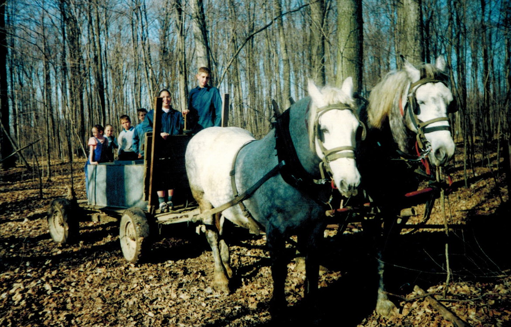
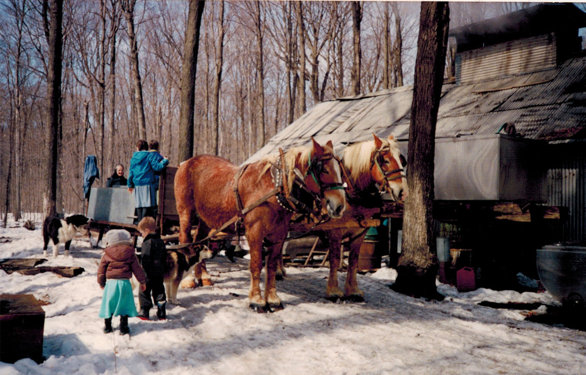
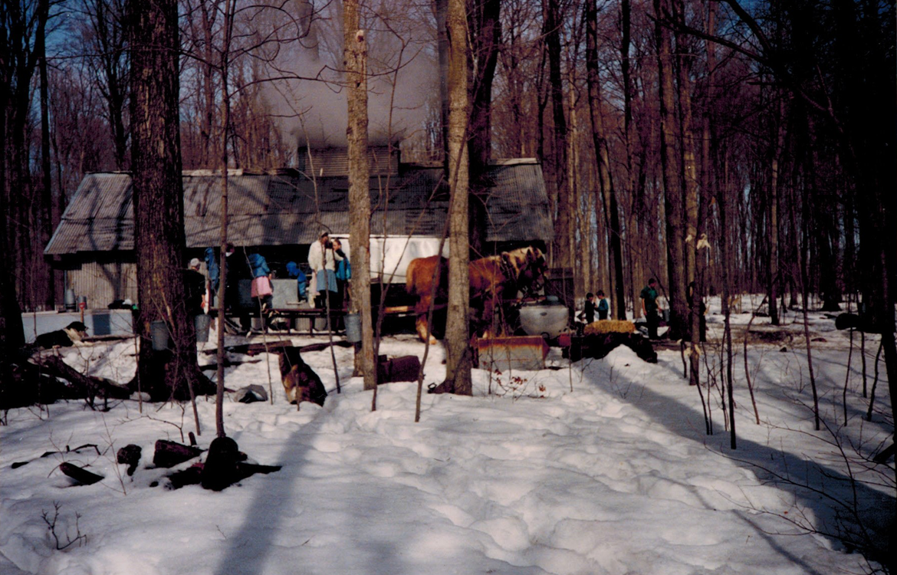

Our History
The Waglers immigrated from France in 1848 and first settled in Wilmot Township, on the north side of what is now Baden. Our Great-Great-Great Grandfather Jacob Wagler made this trip as a 9-yr old boy with his family. Years later, when Jacob’s father, Christian, sold their Baden farm, he did not sell it to any of his children, but rather to two Scotsmen, James and John Livingston, who built the mansion which is now Castle Kilbride!
In 1891, Jacob’s second son Daniel and his wife Mary purchased a farm near Nithburg. Daniel had always wanted a farm with hills. He would say, “There’s always something to be glad about. You’re glad when you are up the hill and glad when you’re down again.” The farm he purchased had several hills and also had the Nith River flowing through it. It was on this farm that Dan first made maple syrup!
In 1921, Dan’s son Amos purchased a farm on Perth Line 56, across from Nithburg, and this is the farm we currently own and love and on which we make maple syrup! Amos began to make maple syrup soon after he bought the farm. At that time he used spiles and pails to tap the trees and a pan to boil the sap. He would just keep adding sap until they had enough, and would often finish it in the house in a kettle on the stove. The first evaporator to boil the sap was installed in 1927! Amos’ son Norman took over the farm in 1959 followed by Norman’s son David in 1997. Both carried on the passion and tradition of making maple syrup. In the early 80's the first pipeline was put in and they have been making upgrades ever since.
In 2012, we, David & Rosanna, built a canning and storage facility so that we can sell our maple syrup federally inspected. It was an exciting day in Dec 2014 when we received our registration #!
As you can see, maple syrup has been in our family for many generations. We have watched and learned as the process has become more modernized, all the while ensuring the quality of the syrup is not compromised. We are happy to be known for our exceptional taste and quality!

.png)